Homeboard TV · Screensaver catalogueHOMEBOARD TV ANDROID TV & GOOGLE TV · IN DEVELOPMENT
Screensaver catalogue.
Choose a built-in scene, use an Android screensaver app, or bring your Home background into the screensaver.
Clock · built in
Time and date over a slow glow, Home background or black. The clock moves each minute; the Home backdrop can be dimmed.
Clock screensaver · Cast1 captureHome background · built in
Show the current Home background full-screen, with an optional clock and independent dimming. This can include a wallpaper provider.
Android screensaver apps
Installed apps such as Aerial Views appear by name. Android runs them through Use everywhere; app content and settings vary.
Choose and start
Go to Home settings → Screensaver. Preview built-ins and save with Undo. Let Android decide, or set a 1–30 minute Home idle time.
Background generators & providers
Install these separately via Home settings → Appearance → Background → Get providers, then select the provider as Home’s background. Choose Home background above to show it in the screensaver. Video playback in the screensaver service remains unverified.
| Overflight ↗ | Aerial videos | GitHub 1.20 baseline passed; formats partly tested. |
| Aerial Views ↗ | Aerial videos | GitHub 1.8.5 baseline passed; Play edition untested. |
| Movie Art ↗ | Movie artwork | Play edition untested; source build needs a TMDB key. |
| Daily Photos ↗ | Daily images | GitHub 1.10 baseline passed. |
| Core Motion ↗ | Video loops | Installation verified; rendering tests incomplete. |
| Sofadrop ↗ | Community provider | Playback untested; Play testing requires enrollment. |
| Booru Wallpaper ↗ | Community images | Playback untested; general-rated default reviewed. |
Use everywhere: One-time developer permission is required. Homeboard asks before managing Android’s screensaver, keeps the original and offers Restore. Android controls its idle timeout.
Testing and limits: Built-ins and Home idle behavior have Cast1 evidence; Use everywhere, selection and Restore passed on Cast1; Cast2 remains unverified. Direct selection of providers as screensavers, a screensaver directory and phone controls are planned. Weather Wallpaper v2.11 is excluded after a security review.
HOMEBOARD TV BACKGROUND PROVIDERS
Backgrounds in action.
Install a provider separately, select it as your Home background, then choose Home background in Screensaver. These captures show the providers in Homeboard; screensaver video playback still needs verification.
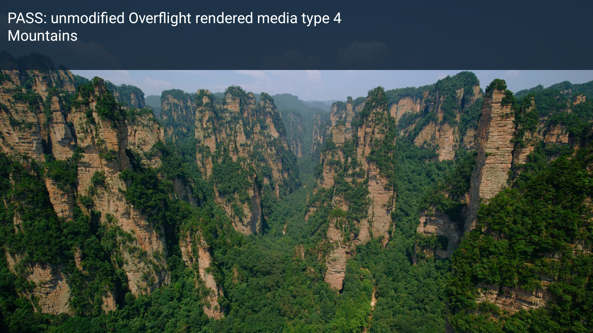
Overflight · Aerial video playing in Homeboard. Google Play ↗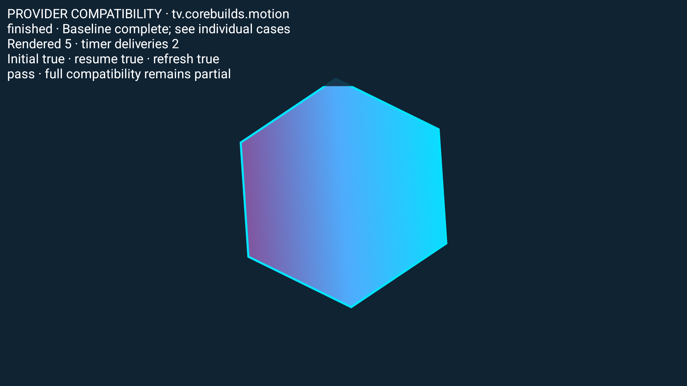
Core Motion · Provider baseline capture; rendering tests remain incomplete. Publisher ↗Find more: The provider list on the previous page links to Aerial Views, Movie Art, Daily Photos, Sofadrop and Booru Wallpaper. Their appearance and availability depend on the provider and its configuration.
See the provider directory and setup guide for installation and compatibility details.
WORLD FOUNDRY AQUARIUM · ALL 12 LEVELS
Aquarium collection.
World Foundry scene images. Discus is in a development worktree; the main checkout lists 11 tanks. Availability depends on the installed build.
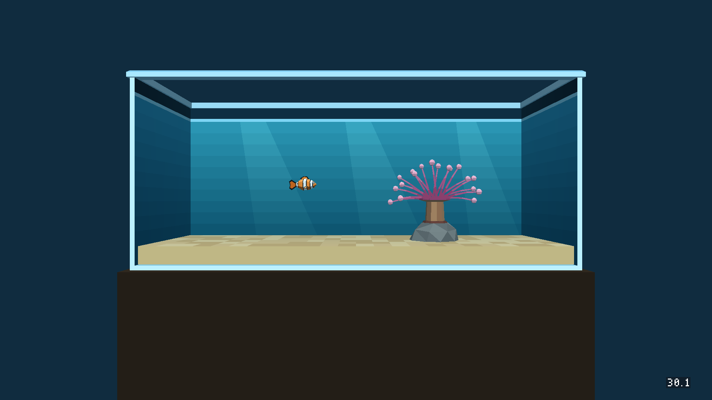
Clownfish & Sea Anemone · TV capture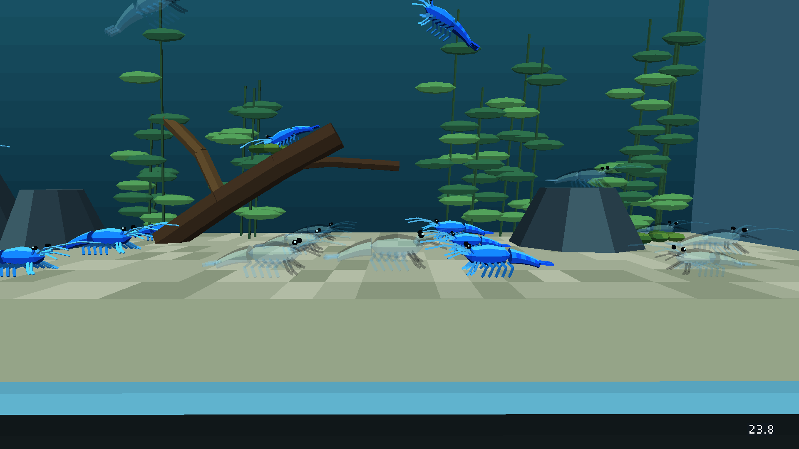
Blue Shrimp · TV capture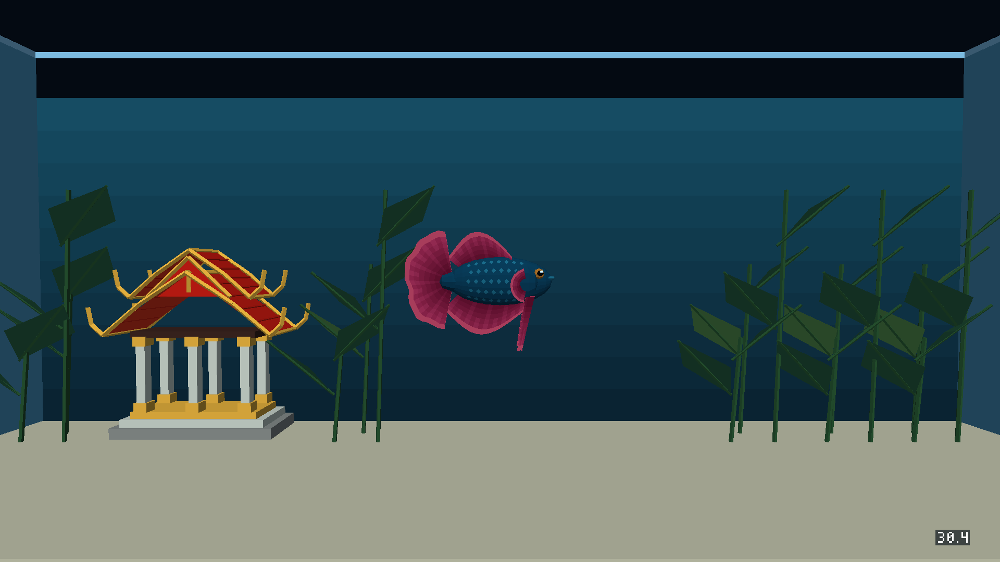
Calm Betta · TV capture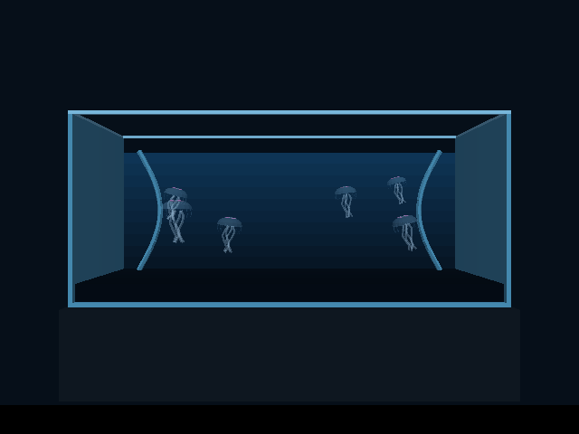
Jellyfish · Engine capture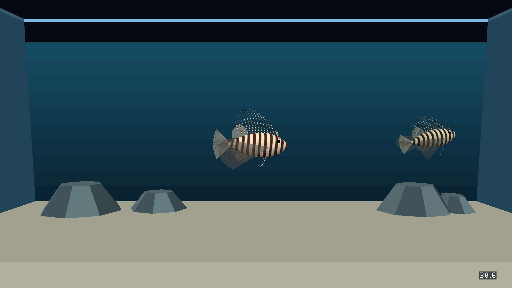
Lionfish · TV capture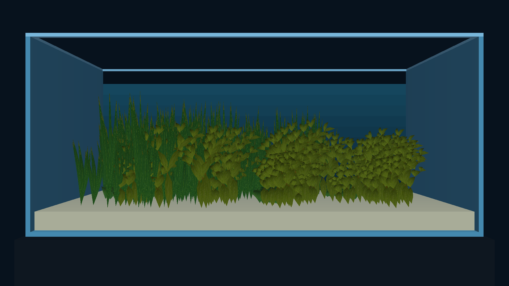
Planted Tank · Scene artwork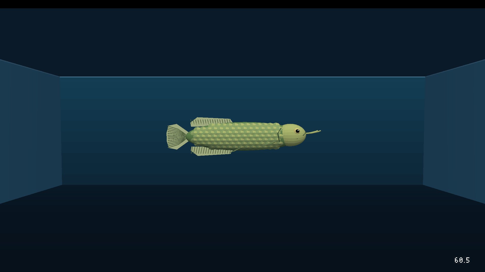
Asian Arowana · TV capture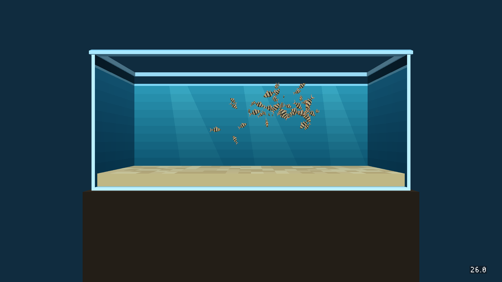
Tiger Barbs · TV capture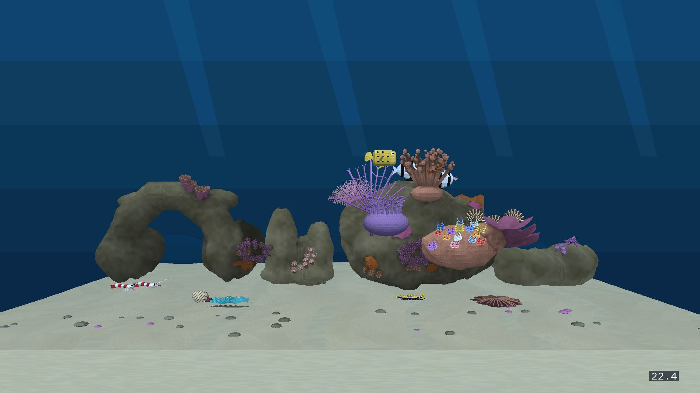
Gulf of Thailand Reef · TV capture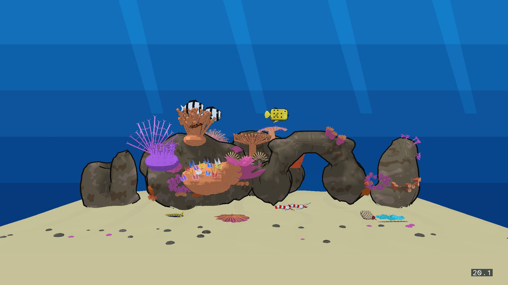
Gulf of Thailand Reef · Anime · TV capture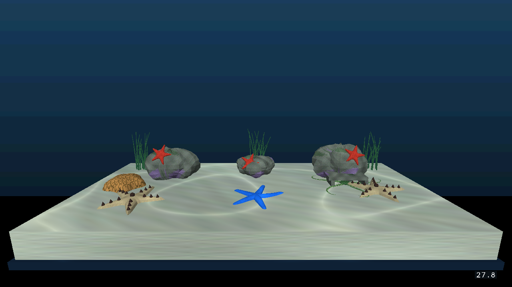
Sea Stars · Scene capture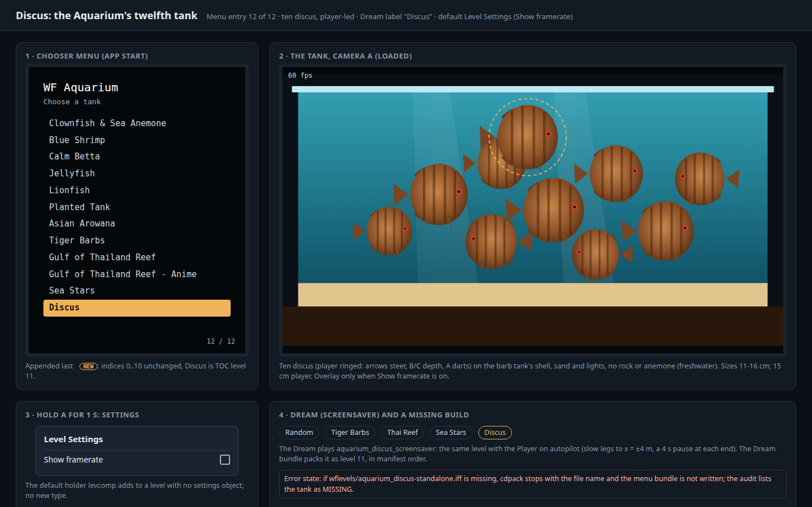
Discus · Design image · development branchWORLD FOUNDRY 3D CLOCKS · 3 LEVELS
3D clocks.
The three-level clocks roster is in a development worktree. Packaging and Homeboard integration depend on the build installed.
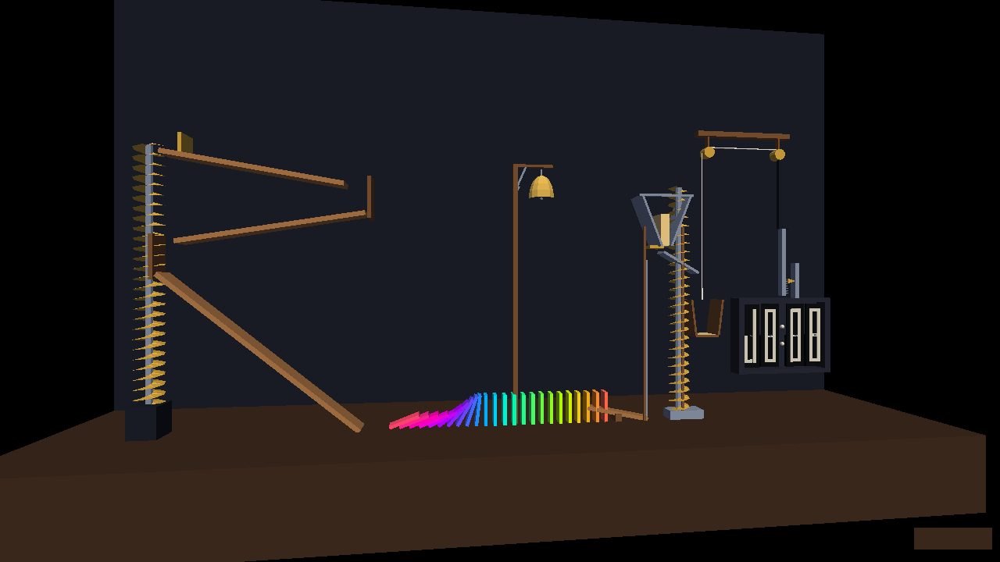
Minute Machine · Scene artwork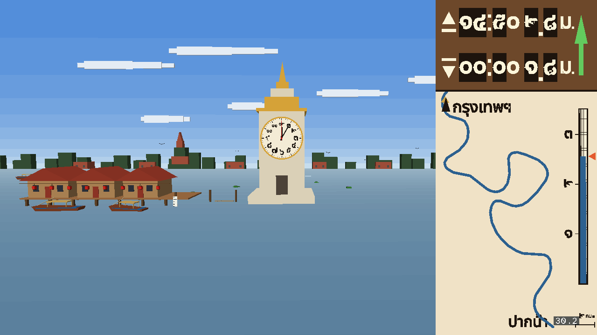
Tide Harbour · Development capture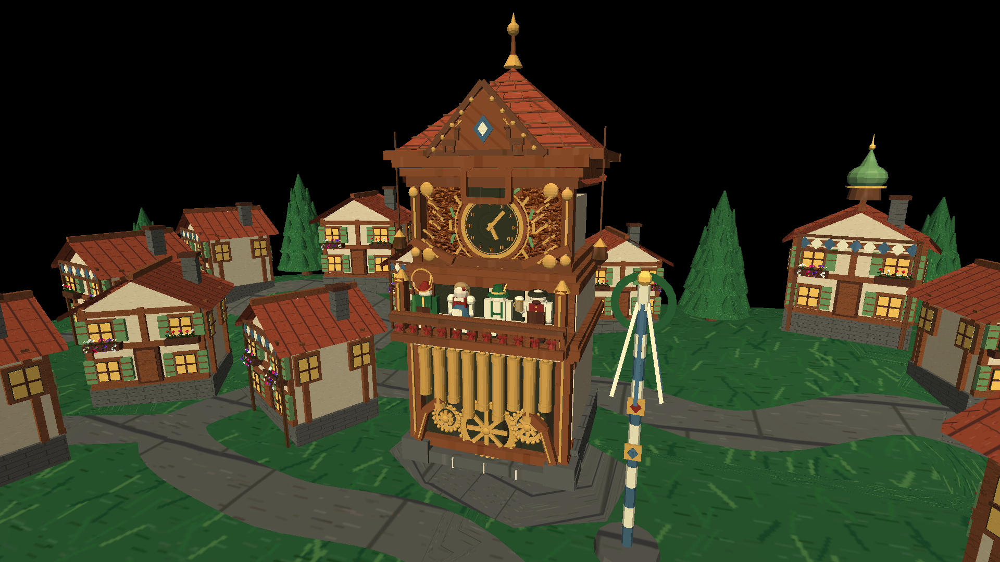
Cuckoo Village · TV development capture